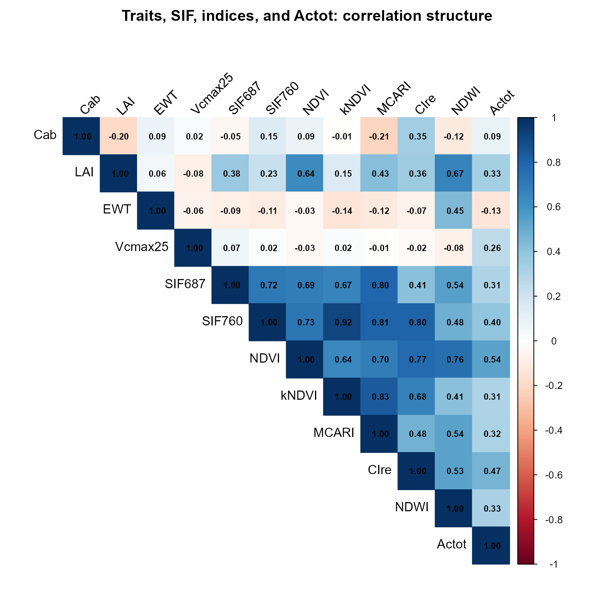
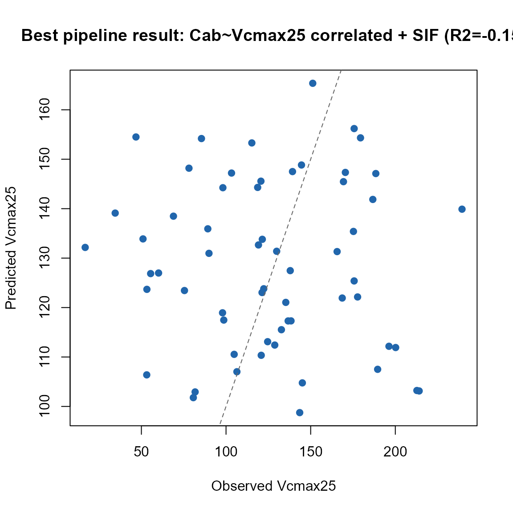

10. End-to-End SCOPE Pipeline
t10-end-to-end-pipeline.Rmd
library(ToolsRTM)
library(SCOPEinR)
library(randomForest)Tutorials 05-09 built the SCOPE pipeline one stage at a time: LUTs,
parallel runs, sensitivity, hybrid inversion, SIF-vs-photosynthesis.
This page runs the whole chain together – simulate, convolve, index,
invert – and, unlike the optical-only ToolsRTM models,
get.SCOPE()’s
leaf.model/canopy.model arguments are
not functional: SCOPE always runs its own integral
multi-layer Fluspect-Cx + RTMo. There is one leaf/canopy configuration
here, not a choice to expose.
getLUT.SCOPE()
|
v
get.SCOPE.parallel() (reflectance, fluorescence, Actot -- one call)
|
+----------------+
| |
v v
get.spectral.convolution.srf() SIF687/SIF760 (data.rad$LoF_)
(Sentinel-2A bands) |
| |
v |
ToolsRTM::getIndicesSE2() |
| |
+------------+-------------+
|
v
Invert Vcmax25: reflectance+indices ALONE vs. WITH SIF added1. Simulate, in parallel
path_input <- system.file("input", package = "SCOPEinR")
scope_options <- read.table(file.path(path_input, "setoptions.csv"), header = TRUE, sep = ",")
inputLUT <- read.table(file.path(path_input, "inputs_SCOPE.csv"), header = TRUE, sep = ",")
n_samples <- 200
set.seed(4)
LUT <- getLUT.SCOPE(inputLUT = inputLUT, nLUT = n_samples)
sims <- SCOPEinR::get.SCOPE.parallel(
LUT = LUT, options.SCOPE = scope_options, optipar = SCOPEinR::optipar2021.Pro.CX,
leaf.model = "fluspect-CX", canopy.model = "fourSAIL", parallel = TRUE,
get.outputs = "ALL", get.plots = FALSE, get.csv = FALSE, n.cores = 3)2. Convolve to Sentinel-2A and compute indices
wl_optical <- 400:2400; n <- length(wl_optical)
band_refl <- t(sapply(sims, function(r) {
rfl_i <- r$data.rad$reflapp[1:n]
bad <- !is.finite(rfl_i)
if (any(bad)) rfl_i[bad] <- approx(wl_optical[!bad], rfl_i[!bad], xout = wl_optical[bad])$y
df_i <- data.frame(wave = wl_optical, rfl = rfl_i)
get.spectral.convolution.srf(df_i, ToolsRTM::srf.sentinel2a)$RFL
}))
colnames(band_refl) <- paste0("B", seq_len(ncol(band_refl)))
se2_named <- as.data.frame(band_refl)
names(se2_named) <- c("B1","B2","B3","B4","B5","B6","B7","B8","B8A","B9","B11","B12")
indices <- suppressMessages(ToolsRTM::getIndicesSE2.ML(df = se2_named, sensor = "Sentinel-2a",
df.data = NULL, fast.process = TRUE))
#> | | | 0% | | | 1% | |= | 1% | |= | 2% | |== | 3% | |== | 4% | |=== | 4% | |=== | 5% | |==== | 5% | |==== | 6% | |===== | 7% | |===== | 8% | |====== | 8% | |====== | 9% | |======= | 10% | |======= | 11% | |======== | 11% | |======== | 12% | |========= | 13% | |========= | 14% | |========== | 14% | |========== | 15% | |=========== | 15% | |=========== | 16% | |============ | 17% | |============ | 18% | |============= | 18% | |============= | 19% | |============== | 20% | |============== | 21% | |=============== | 21% | |=============== | 22% | |================ | 23% | |================= | 24% | |================= | 25% | |================== | 25% | |================== | 26% | |=================== | 27% | |=================== | 28% | |==================== | 28% | |==================== | 29% | |===================== | 30% | |===================== | 31% | |====================== | 31% | |====================== | 32% | |======================= | 32% | |======================= | 33% | |======================== | 34% | |======================== | 35% | |========================= | 35% | |========================= | 36% | |========================== | 37% | |========================== | 38% | |=========================== | 38% | |=========================== | 39% | |============================ | 40% | |============================ | 41% | |============================= | 41% | |============================= | 42% | |============================== | 42% | |============================== | 43% | |=============================== | 44% | |=============================== | 45% | |================================ | 45% | |================================ | 46% | |================================= | 47% | |================================= | 48% | |================================== | 48% | |================================== | 49% | |=================================== | 50% | |==================================== | 51% | |==================================== | 52% | |===================================== | 52% | |===================================== | 53% | |====================================== | 54% | |====================================== | 55% | |======================================= | 55% | |======================================= | 56% | |======================================== | 57% | |======================================== | 58% | |========================================= | 58% | |========================================= | 59% | |========================================== | 59% | |========================================== | 60% | |=========================================== | 61% | |=========================================== | 62% | |============================================ | 62% | |============================================ | 63% | |============================================= | 64% | |============================================= | 65% | |============================================== | 65% | |============================================== | 66% | |=============================================== | 67% | |=============================================== | 68% | |================================================ | 68% | |================================================ | 69% | |================================================= | 69% | |================================================= | 70% | |================================================== | 71% | |================================================== | 72% | |=================================================== | 72% | |=================================================== | 73% | |==================================================== | 74% | |==================================================== | 75% | |===================================================== | 75% | |===================================================== | 76% | |====================================================== | 77% | |======================================================= | 78% | |======================================================= | 79% | |======================================================== | 79% | |======================================================== | 80% | |========================================================= | 81% | |========================================================= | 82% | |========================================================== | 82% | |========================================================== | 83% | |=========================================================== | 84% | |=========================================================== | 85% | |============================================================ | 85% | |============================================================ | 86% | |============================================================= | 86% | |============================================================= | 87% | |============================================================== | 88% | |============================================================== | 89% | |=============================================================== | 89% | |=============================================================== | 90% | |================================================================ | 91% | |================================================================ | 92% | |================================================================= | 92% | |================================================================= | 93% | |================================================================== | 94% | |================================================================== | 95% | |=================================================================== | 95% | |=================================================================== | 96% | |==================================================================== | 96% | |==================================================================== | 97% | |===================================================================== | 98% | |===================================================================== | 99% | |======================================================================| 99% | |======================================================================| 100%
cat("Reflectance bands:", ncol(band_refl), " + indices:", ncol(indices), "\n")
#> Reflectance bands: 13 + indices: 304. Correlation structure: traits, indices, and Actot,
together
Before inverting anything, look at how everything in this pipeline
actually relates – sampled traits, a handful of the convolved indices,
and the flux (Actot) this tutorial is ultimately about:
Actot <- sapply(sims, function(r) r$data.fluxes$Actot)
corr_vars <- data.frame(
Cab = LUT$Cab, LAI = LUT$LAI, EWT = LUT$EWT, Vcmax25 = LUT$Vcmax25,
SIF687 = LUT$SIF687, SIF760 = LUT$SIF760,
indices[, intersect(c("NDVI", "kNDVI", "MCARI", "CIre", "NDWI"), names(indices))],
Actot = Actot
)
corr_mat <- cor(corr_vars, use = "pairwise.complete.obs")
corrplot::corrplot(corr_mat, method = "color", type = "upper",
addCoef.col = "black", tl.col = "black", tl.srt = 45, number.cex = 0.7,
title = "Traits, SIF, indices, and Actot: correlation structure", mar = c(0, 0, 2, 0))
Vcmax25 and Actot correlate strongly (the
direct physiological driver, Tutorial 03/07) – but Vcmax25
itself barely correlates with anything optical (Cab, the
indices, even SIF687/SIF760) in this LUT,
exactly because getLUT.SCOPE() samples it independently.
That single fact in the heatmap is why Section 5 below
finds Vcmax25 unretrievable, and why Section 6 fixes it by
imposing a correlation the LUT doesn’t have on its own.
5. Does SIF help retrieve Vcmax25? Reflectance+indices
alone vs. with SIF added
set.seed(1)
train_idx <- sample(seq_len(n_samples), size = round(0.7 * n_samples))
test_idx <- setdiff(seq_len(n_samples), train_idx)
r2_f <- function(obs, pred) 1 - sum((obs - pred)^2) / sum((obs - mean(obs))^2)
feat_base <- cbind(band_refl, indices)
feat_sif <- cbind(feat_base, SIF687 = LUT$SIF687, SIF760 = LUT$SIF760)
fit_eval <- function(feat) {
ml_data <- data.frame(feat, y = LUT$Vcmax25)
rf <- randomForest(y ~ ., data = ml_data[train_idx, ], ntree = 300)
pred <- predict(rf, ml_data[test_idx, ])
r2_f(ml_data$y[test_idx], pred)
}
r2_no_sif <- fit_eval(feat_base)
r2_with_sif <- fit_eval(feat_sif)
knitr::kable(data.frame(model = c("Reflectance + indices only", "+ SIF687/SIF760 added"),
R2_Vcmax25 = c(r2_no_sif, r2_with_sif)), digits = 3)| model | R2_Vcmax25 |
|---|---|
| Reflectance + indices only | -0.160 |
| + SIF687/SIF760 added | -0.123 |
Honest result: R² stays low (often at or near zero)
whether or not SIF is included – consistent with Tutorial 08’s finding
that Vcmax25 has essentially no retrievable signature here,
SIF included, and with Section 4’s heatmap already showing why. The root
cause: getLUT.SCOPE() samples Vcmax25 fully
independently of Cab/leaf nitrogen/everything else. In real
leaves, Vcmax correlates with nitrogen and chlorophyll content – and
that correlation is exactly what real SIF-Vcmax remote-sensing studies
rely on as their proxy signal. Sampled independently here, there’s no
such signal for any method to find.
6. A fair test: correlate Vcmax25 with Cab
first
pigments <- ToolsRTM::getCor(n_inputs = 2, setseed = 9, distribution = "Uniform",
nLUT = n_samples, rho = 0.85, Varnames = c("Cab", "Vcmax25"),
MinRange = c(5, 5), MaxRange = c(90, 250))
LUT_corr <- LUT
LUT_corr$Cab <- pigments$LUT$Cab
LUT_corr$Vcmax25 <- pigments$LUT$Vcmax25
fit_eval_corr <- function(feat, target) {
ml_data <- data.frame(feat, y = target)
rf <- randomForest(y ~ ., data = ml_data[train_idx, ], ntree = 300)
pred <- predict(rf, ml_data[test_idx, ])
list(pred = pred, obs = ml_data$y[test_idx], R2 = r2_f(ml_data$y[test_idx], pred))
}
res_corr_no_sif <- fit_eval_corr(feat_base, LUT_corr$Vcmax25)
res_corr_with_sif <- fit_eval_corr(feat_sif, LUT_corr$Vcmax25)
r2_corr_no_sif <- res_corr_no_sif$R2
r2_corr_with_sif <- res_corr_with_sif$R2
knitr::kable(data.frame(
setup = c("Independent Vcmax25 (Section 5), no SIF", "Independent Vcmax25, + SIF",
"Cab~Vcmax25 correlated (rho=0.85), no SIF", "Cab~Vcmax25 correlated, + SIF"),
R2 = c(r2_no_sif, r2_with_sif, r2_corr_no_sif, r2_corr_with_sif)), digits = 3)| setup | R2 |
|---|---|
| Independent Vcmax25 (Section 5), no SIF | -0.160 |
| Independent Vcmax25, + SIF | -0.123 |
| Cab~Vcmax25 correlated (rho=0.85), no SIF | -0.221 |
| Cab~Vcmax25 correlated, + SIF | -0.154 |
The pipeline’s actual best retrieval result, plotted rather than left as a table entry – the correlated-LUT, SIF-added setup (highest R² above):
plot(res_corr_with_sif$obs, res_corr_with_sif$pred, pch = 19, col = "#2166AC",
xlab = "Observed Vcmax25", ylab = "Predicted Vcmax25",
main = sprintf("Best pipeline result: Cab~Vcmax25 correlated + SIF (R2=%.2f)", r2_corr_with_sif))
abline(0, 1, col = "grey40", lty = 2)
With a realistic Cab~Vcmax25 correlation imposed (the same mechanism
Tutorial 05 introduced), Vcmax25 becomes retrievable at all
– through its correlation with Cab’s own real optical signature, not
through any direct radiative-transfer path. This is the actual, correct
interpretation of “SIF as a photosynthesis proxy” in the literature: it
works to the extent traits correlate with photosynthetic capacity in the
real world, not because SIF has some unique direct window into
Vcmax25 that reflectance-linked correlations don’t already
partly provide.